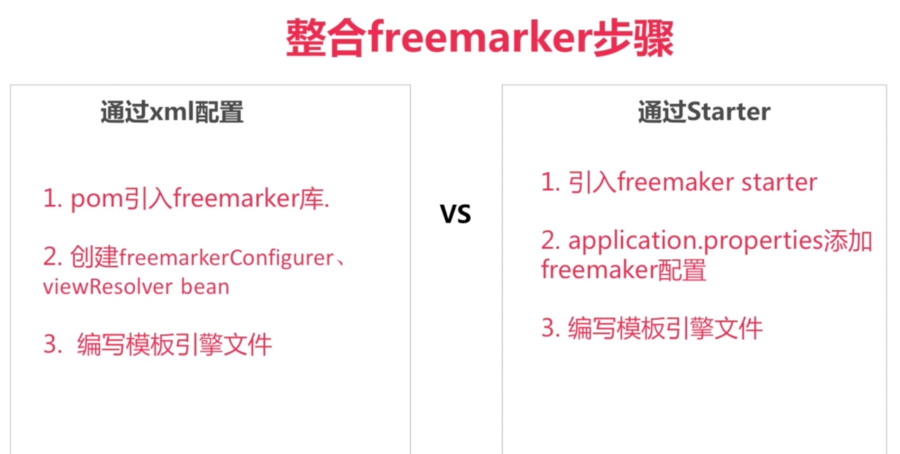

整合freemaarker¶
通过 starter 方式
spring.freemarker.charset=UTF-8
spring.freemarker.content-type=text/html;charset=UTF-8
spring.freemarker.expose-request-attributes=true
spring.freemarker.expose-session-attributes=true
spring.freemarker.expose-spring-macro-helpers=true
spring.freemarker.suffix=.ftl
spring.freemarker.settings.datetime_format=yyyy-MM-dd HH:mm:ss
spring.freemarker.settings.default_encoding=UTF-8
spring.freemarker.settings.auto_import=common/common.ftl as common